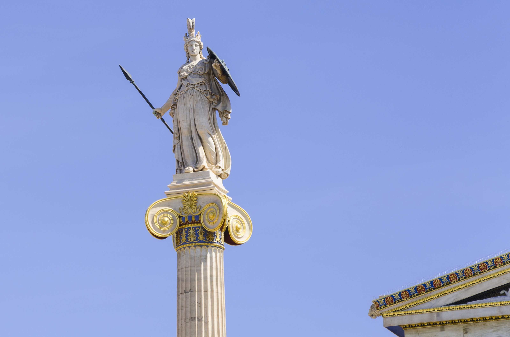

Esculturas do Mediterrâneo: representações artísticas detalhadas em pedra, mármore e bronze.
Página atual: 1
Esculturas do Mediterrâneo: representações artísticas detalhadas em pedra, mármore e bronze.